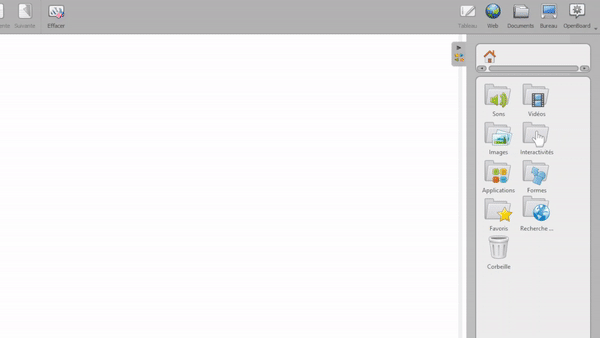
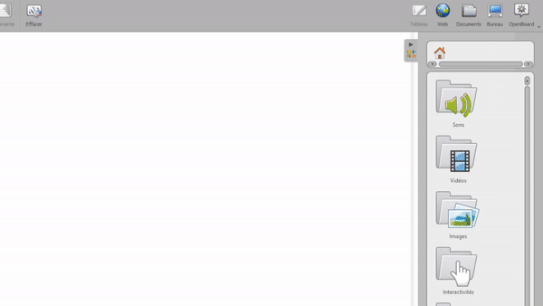
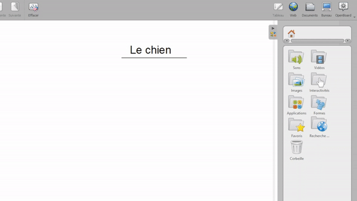

Organizza la tua cartella Immagini
Le catture dello schermo aggiunte alla Libreria vengono salvate nella cartella Immagini :
Puoi creare cartelle utilizzando nella parte inferiore della Libreria. Quindi, trascina e rilascia le tue immagini nelle diverse cartelle che hai creato.

 Non importa dove ti trovi nella Libreria di OpenBoard, le immagini che aggiungi saranno automaticamente collocate all'interno della cartella Immagini, per mantenere l'organizzazione.
Non importa dove ti trovi nella Libreria di OpenBoard, le immagini che aggiungi saranno automaticamente collocate all'interno della cartella Immagini, per mantenere l'organizzazione.
Aggiungi immagini dal tuo computer
Puoi anche aggiungere immagini direttamente dal tuo computer, come illustrato di seguito :

Aggiungi immagini dai motori di ricerca
Ultimo ma non meno importante, puoi cercare e aggiungere alla tua lavagna immagini royalty free utilizzando i motori di ricerca situati nella cartella Ricerca Web :

Al posto di utilizzare il trascinamento, basta fare clic su una delle immagini restituite dalla tua ricerca per visualizzare i dettagli sull'immagine e trovare un'opzione per aggiungerla alla Libreria senza aggiungerla al tuo documento attuale. Utile quando si prepara una lezione!